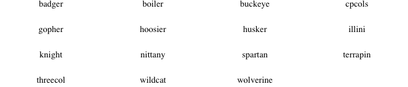
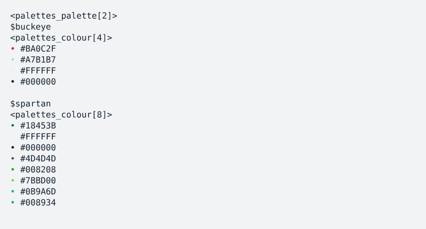

A compilation of various commands and tools I’ve used that may be helpful. This package will not be routinely updated, but I’ll add things as they come up.
Installation
Install the development version from GitHub using the following:
# install.packages("devtools")
devtools::install_github("guziordo/guzioR")Included Palettes
There are 3 palettes included, built by myself or others.

Thank you to Dr. Lydia-Ann Ghuneim for providing the CPCOLS palette.
Selecting Palettes
Each can be subset based on what groups are wanted, either with $<name> for single palettes within a set or using the method below to select multiple.
b10.pal[c("buckeye","spartan")]